Przywróciliśmy blask neoklasycznej kamienicy, tworząc przestrzeń dla koneserów wielkomiejskiego życia.
Odnowiliśmy XIX-wieczne detale architektoniczne, wpisując w zabytkową tkankę nowoczesną infrastrukturę.
W odnowionych wnętrzach czekają na Ciebie przestronne, wysokie salony pełne naturalnego światła, oryginalny detal oraz rzemieślnicza precyzja wykończenia. To przestrzeń stworzona dla koneserów miejskiego życia.
Od 1893 roku w Łodzi
Posesja przy dawnej ulicy Cegielnianej powstała w okresie najszybszego wzrostu miasta. Skala budynku, wysokość pomieszczeń sięgająca ponad trzech metrów i rytm geometrycznych okien to zapis tego, jak solidnie budowano tu przestrzeń do życia i pracy.
Rewitalizację prowadziliśmy z szacunkiem do historii tego miejsca. To, co przez lata budowało jego charakter, pozostaje częścią Jaracza 21 także dzisiaj.
Poznaj historię kamienicy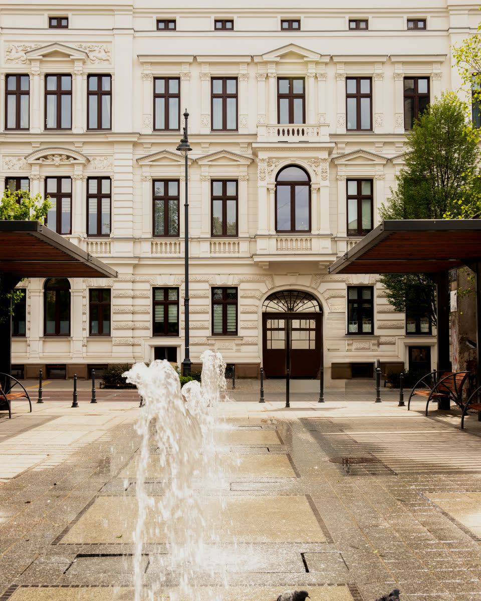
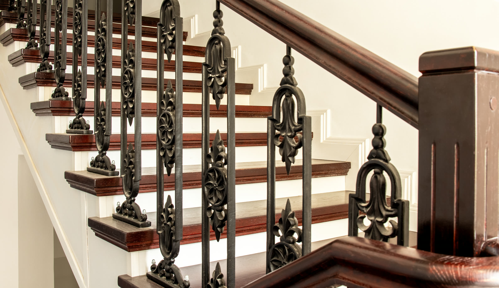
Czas mija. Charakter zostaje.
-
Oryginalne detale
Dębowe stopnie, odrestaurowane drewniane poręcze, żelazne balustrady.
-
Współczesna inżynieria
Cichobieżna, 5-osobowa winda wpisana w zabytkową strukturę klatki schodowej.
-
Standard wykończenia
Trwałe, szlachetne materiały w mieszkaniach oraz precyzyjnie wykończone korytarze i części wspólne.
-
Prywatność i wygoda
Dla wybranych lokali dostępne są również prywatne miejsca parkingowe oraz komórki lokatorskie na terenie posesji.
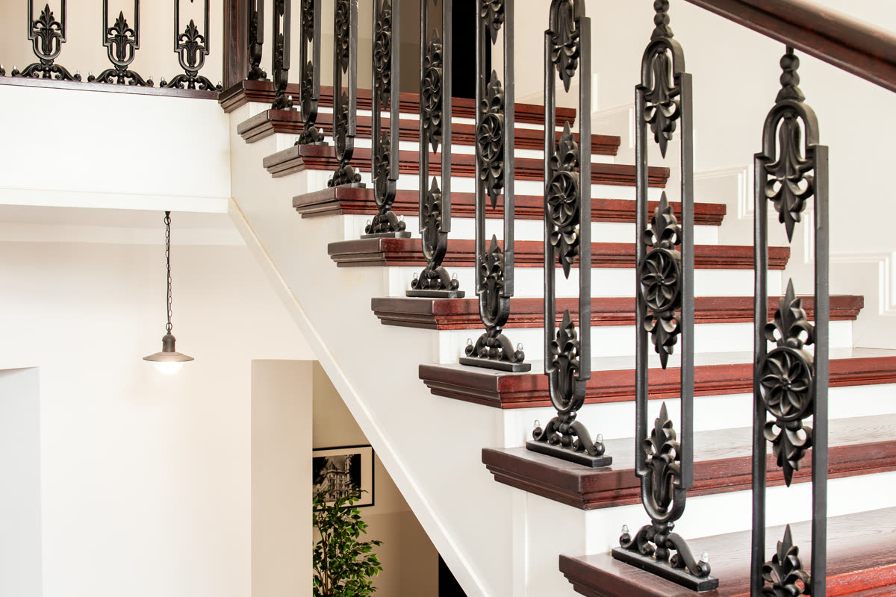
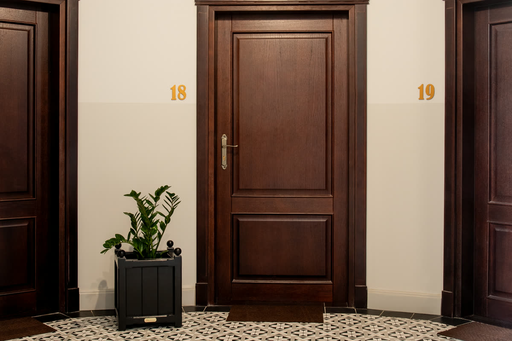
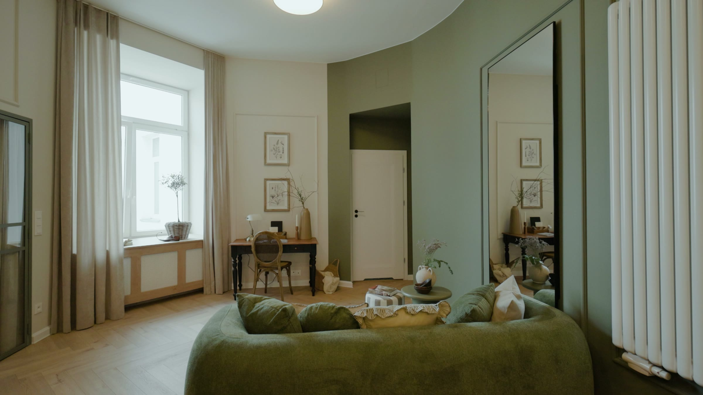
Światło. Detal.
Przestrzeń.
W zależności od potrzeb oferujemy lokale przeznaczone na własność lub na wynajem. Dostępne są unikatowe mieszkania w pełni wykończone, mieszkania w stanie deweloperskim oraz mieszkania do remontu.
Odkryj mieszkania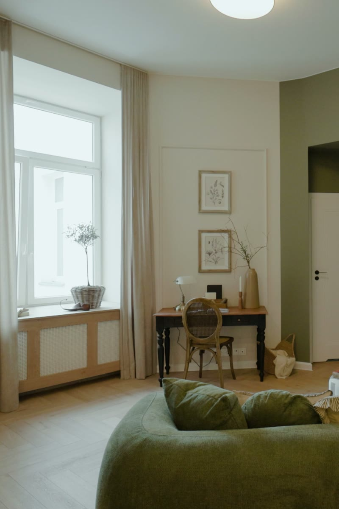
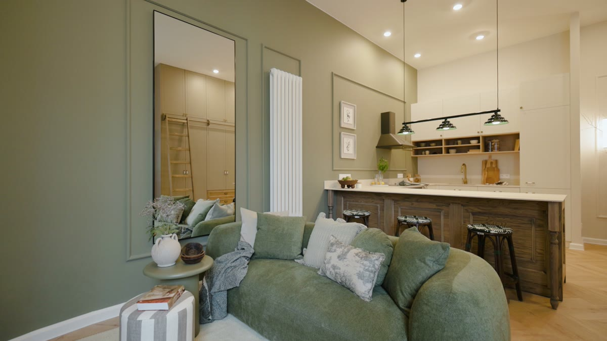
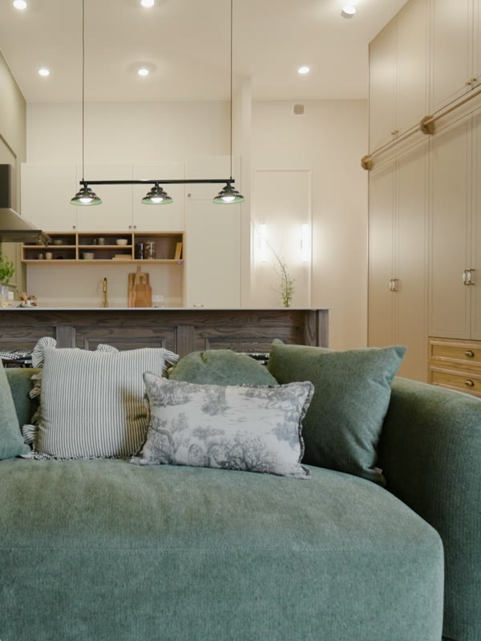
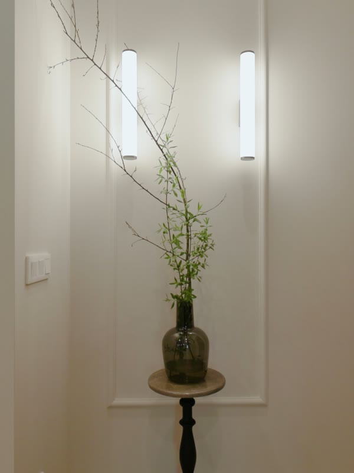
Dobrze tu wracać.
Dobrze stąd wyruszać.
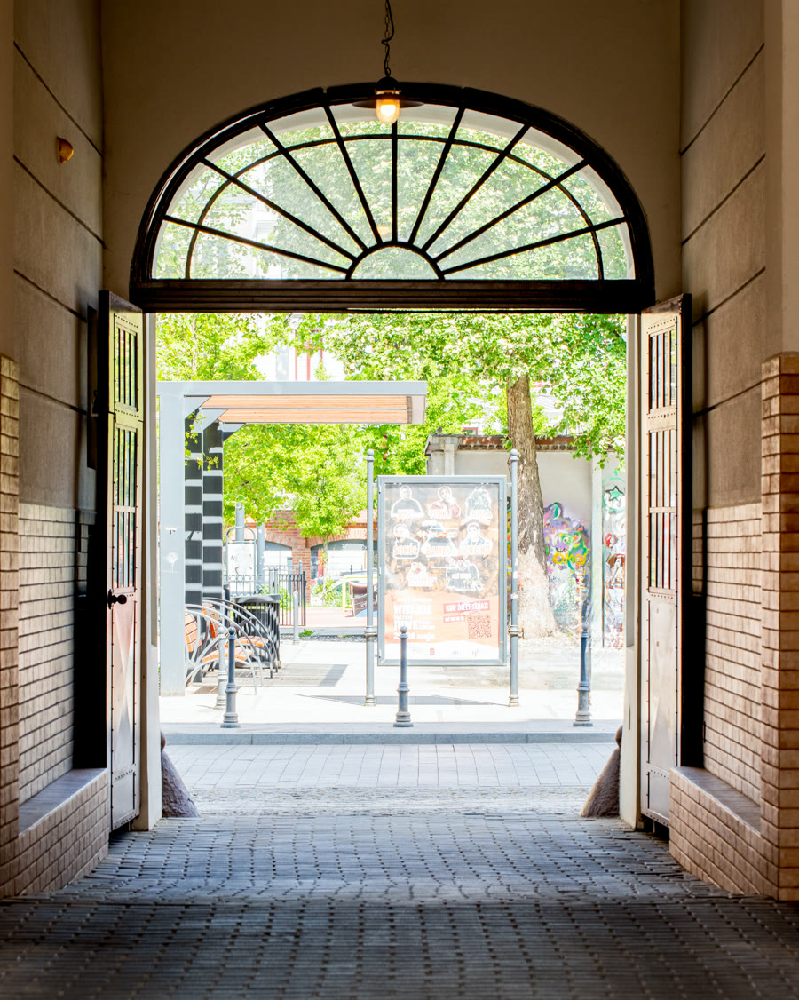
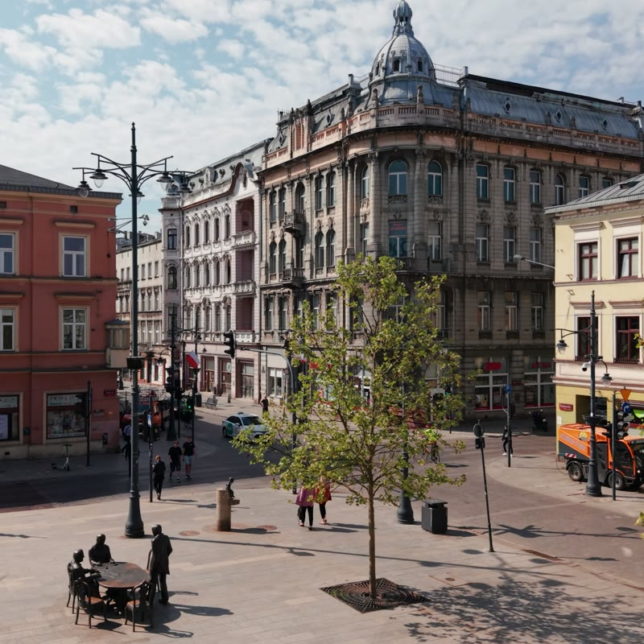
Jaracza 21 to adres dla tych, którzy chcą czerpać z miasta to, co najlepsze, nie rezygnując z prywatności.
To wielkomiejskie centrum, w którym czas mierzy się krokami, a większość codziennych spraw da się załatwić pieszo.
Poznaj okolicęSerce włożone
w to miejsce.
Fotorelacja z kulis rewitalizacji, od pierwszych prac po dzisiejszy dzień. Ludzie, pył i detale, z których powstało Jaracza 21.
Zobacz kronikęUmów się
na oglądanie.
Część lokali jest już gotowa do zamieszkania, inne właśnie zyskują ostateczny szlif. Oferujemy przestrzenie zarówno na własność, jak i na wynajem.